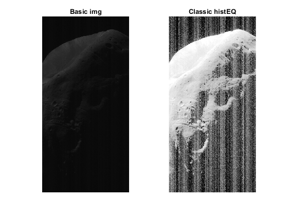
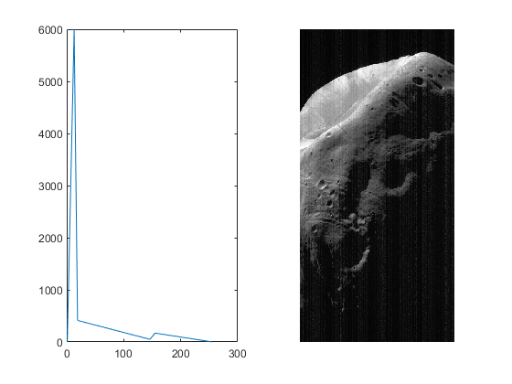
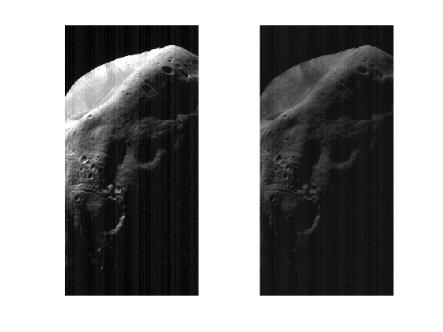

clear all;
close all;
moon = imread('Histogram/phobos.bmp');
[moon_hist x] = imhist(moon);
[sizeX sizeY] = size(moon);
mean_of_col = mean(moon);
lm_bbhe = round(mean(mean_of_col));
hist1_BBHE = moon_hist(1:lm_bbhe,:);
hist2_BBHE = moon_hist(lm_bbhe+1:size(moon_hist),:);
hist1_BBHE_cummulated = cumsum(hist1_BBHE);
hist2_BBHE_cummulated = cumsum(hist2_BBHE);
hist1_BBHE_normalised = hist1_BBHE_cummulated/max(hist1_BBHE_cummulated);
hist2_BBHE_normalised = hist2_BBHE_cummulated/max(hist2_BBHE_cummulated);
C1n = (lm_bbhe)*hist1_BBHE_normalised;
C2n = lm_bbhe+1 + (255-lm_bbhe+1)*hist2_BBHE_normalised;
lutBBHE = uint8([C1n; C2n]);
phobosLUTBBHE = intlut(moon,lutBBHE);
figure('name','BBHE');
imshow(phobosLUTBBHE);
[valueDSIGE lm_DSIHE] = min( abs(cumsum(moon_hist)-(sizeX*sizeY/2)));
hist1_DSIGE = moon_hist(1:lm_DSIHE,:);
hist2_DSIGE = moon_hist(lm_DSIHE+1:size(moon_hist),:);
hist1_DSIGE_cummulated = cumsum(hist1_DSIGE);
hist2_DSIGE_cummulated = cumsum(hist2_DSIGE);
hist1_DSIGE_normalised = hist1_DSIGE_cummulated/max(hist1_DSIGE_cummulated);
hist2_DSIGE_normalised = hist2_DSIGE_cummulated/max(hist2_DSIGE_cummulated);
C1n = (lm_DSIHE)*hist1_DSIGE_normalised;
C2n = lm_DSIHE+1 + (255-lm_DSIHE+1)*hist2_DSIGE_normalised;
lutDSIGE = uint8([C1n; C2n]);
phobosLUTDSIGE = intlut(moon,lutDSIGE);
figure('name','DSIGE');
imshow(phobosLUTDSIGE);
clear all;
close all;
figure(1)
lena1 = imread('Histogram/lena1.bmp');
lena2 = imread('Histogram/lena2.bmp');
lena3 = imread('Histogram/lena3.bmp');
lena4 = imread('Histogram/lena4.bmp');
subplot(4,2,1);
imshow(lena1);
title('lena1');
subplot(4,2,2);
imhist(lena1,256);
subplot(4,2,3);
imshow(lena2);
title('lena2');
subplot(4,2,4);
imhist(lena2,256);
subplot(4,2,5);
imshow(lena3);
title('lena3');
subplot(4,2,6);
imhist(lena3,256);
subplot(4,2,7);
imshow(lena4);
title('lena4');
subplot(4,2,8);
imhist(lena4,256);
hist1 = imread('Histogram/hist1.bmp');
figure(2)
subplot(2,2,1);
imshow(hist1);
subplot(2,2,3);
imhist(hist1,256);
adjusted = imadjust(hist1);
subplot(2,2,2);
imshow(adjusted);
subplot(2,2,4);
imhist(adjusted,256);
[H,x] = imhist(hist1);
C = cumsum(H);
k = max(C)/max(H);
C2 = C/k;
figure(7);
plot(x,H);
hold on;
plot(x,C2);
hold off;
figure(8);
subplot(2,1,1);
imhist(adjusted,256);
subplot(2,1,2);
plot(x,C2);
wsp = 255/max(C);
LUT = C * wsp;
LUT = uint8(LUT);
figure
subplot(1,3,1);
plot(x,LUT);
title('Hist. obrazu');
subplot(1,3,2);
B = intlut(hist1,LUT);
imshow(B);
title('Obraz');
subplot(1,3,3);
plot(x,C2);
title('skulumowany');
figure
subplot(1,2,1);
imshow(B);
title('My LUT');
subplot(1,2,2);
histeq(hist1,256);
title('Funkcja Matlaba');
histogram_2 = imread('Histogram/hist2.bmp');
histogram_3 = imread('Histogram/hist3.bmp');
histogram_4 = imread('Histogram/hist4.jpg');
histogram_2R = imadjust(histogram_2);
histogram_3R = imadjust(histogram_3);
histogram_4R = imadjust(histogram_4);
histogram_2HE = histeq(histogram_2);
histogram_3HE = histeq(histogram_3);
histogram_4HE = histeq(histogram_4);
histogram_2CL = adapthisteq(histogram_2);
histogram_3CL = adapthisteq(histogram_3);
histogram_4CL = adapthisteq(histogram_4);
figure(11)
subplot(3,4,1);
imshow(histogram_4);
title('Original');
subplot(3,4,2);
imshow(histogram_4R);
title('Adjusted');
subplot(3,4,3);
imshow(histogram_4HE);
title('HE');
subplot(3,4,4);
imshow(histogram_4CL);
title('CLAHE');
subplot(3,4,5);
imshow(histogram_2);
subplot(3,4,6);
imshow(histogram_2R);
subplot(3,4,7);
imshow(histogram_2HE);
subplot(3,4,8);
imshow(histogram_2CL);
subplot(3,4,9);
imshow(histogram_3);
subplot(3,4,10);
imshow(histogram_3R);
subplot(3,4,11);
imshow(histogram_3HE);
subplot(3,4,12);
imshow(histogram_3CL);
close all;
clear all;
moon = imread('Histogram/phobos.bmp');
hist = histeq(moon);
figure(1)
subplot(1,2,1);
imshow(moon);
title('Basic img');
subplot(1,2,2);
imshow(hist);
title('Classic histEQ');
load histogramZadany;
figure(2)
subplot(1,2,2);
hist2 = histeq(moon,histogramZadany);
imshow(hist2);
subplot(1,2,1);
plot(histogramZadany);
adjusted = imadjust(moon);
clached = adapthisteq(moon);
figure(3)
subplot(1,2,1);
imshow(adjusted);
subplot(1,2,2);
imshow(clached);
  